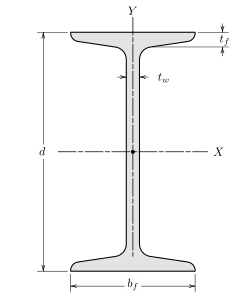

Section D.3 Standard Sections
Subsection D.3.1 Standard Section-US

| Description \({d} \times \, {W}\) |
\(W\) \(\text{lb/ft}\) |
\(A\) \(\text{in}^2\) |
\(d\) \(\text{in}\) |
\(b_f\) \(\text{in}\) |
\(t_w\) \(\text{in}\) |
\(t_f\) \(\text{in}\) |
\(\bar{I}_{xx}\) \(\text{in}^4\) |
\(\bar{I}_{yy}\) \(\text{in}^4\) |
| S24\(\times\)121 | 121 | 35.5 | 24.5 | 8.05 | 0.8 | 1.09 | 3160 | 83 |
| S24\(\times\)106 | 106 | 31.1 | 24.5 | 7.87 | 0.62 | 1.09 | 2940 | 76.8 |
| S24\(\times\)100 | 100 | 29.3 | 24 | 7.25 | 0.745 | 0.87 | 2380 | 47.4 |
| S24\(\times\)90 | 90 | 26.5 | 24 | 7.13 | 0.625 | 0.87 | 2250 | 44.7 |
| S24\(\times\)80 | 80 | 23.5 | 24 | 7 | 0.5 | 0.87 | 2100 | 42 |
| S20\(\times\)96 | 96 | 28.2 | 20.3 | 7.2 | 0.8 | 0.92 | 1670 | 49.9 |
| S20\(\times\)86 | 86 | 25.3 | 20.3 | 7.06 | 0.66 | 0.92 | 1570 | 46.6 |
| S20\(\times\)75 | 75 | 22 | 20 | 6.39 | 0.635 | 0.795 | 1280 | 29.5 |
| S20\(\times\)66 | 66 | 19.4 | 20 | 6.26 | 0.505 | 0.795 | 1190 | 27.5 |
| S18\(\times\)70 | 70 | 20.5 | 18 | 6.25 | 0.711 | 0.691 | 923 | 24 |
| S18\(\times\)54.7 | 54.7 | 16 | 18 | 6 | 0.461 | 0.691 | 801 | 20.7 |
| S15\(\times\)50 | 50 | 14.7 | 15 | 5.64 | 0.55 | 0.622 | 485 | 15.6 |
| S15\(\times\)42.9 | 42.9 | 12.6 | 15 | 5.5 | 0.411 | 0.622 | 446 | 14.3 |
| S12\(\times\)50 | 50 | 14.7 | 12 | 5.48 | 0.687 | 0.659 | 303 | 15.6 |
| S12\(\times\)40.8 | 40.8 | 11.9 | 12 | 5.25 | 0.462 | 0.659 | 270 | 13.5 |
| S12\(\times\)35 | 35 | 10.2 | 12 | 5.08 | 0.428 | 0.544 | 228 | 9.84 |
| S12\(\times\)31.8 | 31.8 | 9.31 | 12 | 5 | 0.35 | 0.544 | 217 | 9.33 |
| S10\(\times\)35 | 35 | 10.3 | 10 | 4.94 | 0.594 | 0.491 | 147 | 8.3 |
| S10\(\times\)25.4 | 25.4 | 7.45 | 10 | 4.66 | 0.311 | 0.491 | 123 | 6.73 |
| S8\(\times\)23 | 23 | 6.76 | 8 | 4.17 | 0.441 | 0.425 | 64.7 | 4.27 |
| S8\(\times\)18.4 | 18.4 | 5.4 | 8 | 4 | 0.271 | 0.425 | 57.5 | 3.69 |
| S6\(\times\)17.25 | 17.25 | 5.05 | 6 | 3.57 | 0.465 | 0.359 | 26.2 | 2.29 |
| S6\(\times\)12.5 | 12.5 | 3.66 | 6 | 3.33 | 0.232 | 0.359 | 22 | 1.8 |
| S5\(\times\)10 | 10 | 2.93 | 5 | 3 | 0.214 | 0.326 | 12.3 | 1.19 |
| S4\(\times\)9.5 | 9.5 | 2.79 | 4 | 2.8 | 0.326 | 0.293 | 6.76 | 0.887 |
| S4\(\times\)7.7 | 7.7 | 2.26 | 4 | 2.66 | 0.193 | 0.293 | 6.05 | 0.748 |
| S3\(\times\)7.5 | 7.5 | 2.2 | 3 | 2.51 | 0.349 | 0.26 | 2.91 | 0.578 |
| S3\(\times\)5.7 | 5.7 | 1.66 | 3 | 2.33 | 0.17 | 0.26 | 2.5 | 0.447 |
Subsection D.3.2 Standard Section-SI
| Description \({d} \times \, {W}\) |
\(W\) \(\text{kg/m}\) |
\(A\) \(\text{mm}^2\) |
\(d\) \(\text{mm}\) |
\(b_f\) \(\text{mm}\) |
\(t_w\) \(\text{mm}\) |
\(t_f\) \(\text{mm}\) |
\(\bar{I}_{xx}\) \(10^6\text{ mm}^4\) |
\(\bar{I}_{yy}\) \(10^6\text{ mm}^4\) |
| S610\(\times\)180 | 180 | 22900 | 622 | 204 | 20.3 | 27.7 | 1320 | 34.5 |
| S610\(\times\)158 | 158 | 20100 | 622 | 200 | 15.7 | 27.7 | 1220 | 32 |
| S610\(\times\)149 | 149 | 18900 | 610 | 184 | 18.9 | 22.1 | 991 | 19.7 |
| S610\(\times\)134 | 134 | 17100 | 610 | 181 | 15.9 | 22.1 | 937 | 18.6 |
| S610\(\times\)119 | 119 | 15200 | 610 | 178 | 12.7 | 22.1 | 874 | 17.5 |
| S510\(\times\)143 | 143 | 18200 | 516 | 183 | 20.3 | 23.4 | 695 | 20.8 |
| S510\(\times\)128 | 128 | 16300 | 516 | 179 | 16.8 | 23.4 | 653 | 19.4 |
| S510\(\times\)112 | 112 | 14200 | 508 | 162 | 16.1 | 20.2 | 533 | 12.3 |
| S510\(\times\)98.2 | 98.2 | 12500 | 508 | 159 | 12.8 | 20.2 | 495 | 11.4 |
| S460\(\times\)104 | 104 | 13200 | 457 | 159 | 18.1 | 17.6 | 384 | 9.99 |
| S460\(\times\)81.4 | 81.4 | 10300 | 457 | 152 | 11.7 | 17.6 | 333 | 8.62 |
| S380\(\times\)74 | 74 | 9480 | 381 | 143 | 14 | 15.8 | 202 | 6.49 |
| S380\(\times\)64 | 64 | 8130 | 381 | 140 | 10.4 | 15.8 | 186 | 5.95 |
| S310\(\times\)74 | 74 | 9480 | 305 | 139 | 17.4 | 16.7 | 126 | 6.49 |
| S310\(\times\)60.7 | 60.7 | 7680 | 305 | 133 | 11.7 | 16.7 | 112 | 5.62 |
| S310\(\times\)52 | 52 | 6580 | 305 | 129 | 10.9 | 13.8 | 94.9 | 4.1 |
| S310\(\times\)47.3 | 47.3 | 6010 | 305 | 127 | 8.89 | 13.8 | 90.3 | 3.88 |
| S250\(\times\)52 | 52 | 6650 | 254 | 125 | 15.1 | 12.5 | 61.2 | 3.45 |
| S250\(\times\)37.8 | 37.8 | 4810 | 254 | 118 | 7.9 | 12.5 | 51.2 | 2.8 |
| S200\(\times\)34 | 34 | 4360 | 203 | 106 | 11.2 | 10.8 | 26.9 | 1.78 |
| S200\(\times\)27.4 | 27.4 | 3480 | 203 | 102 | 6.88 | 10.8 | 23.9 | 1.54 |
| S150\(\times\)25.7 | 25.7 | 3260 | 152 | 90.7 | 11.8 | 9.12 | 10.9 | 0.953 |
| S150\(\times\)18.6 | 18.6 | 2360 | 152 | 84.6 | 5.89 | 9.12 | 9.16 | 0.749 |
| S130\(\times\)15 | 15 | 1890 | 127 | 76.2 | 5.44 | 8.28 | 5.12 | 0.495 |
| S100\(\times\)14.1 | 14.1 | 1800 | 102 | 71.1 | 8.28 | 7.44 | 2.81 | 0.369 |
| S100\(\times\)11.5 | 11.5 | 1460 | 102 | 67.6 | 4.9 | 7.44 | 2.52 | 0.311 |
| S75\(\times\)11.2 | 11.2 | 1420 | 76.2 | 63.8 | 8.86 | 6.6 | 1.21 | 0.241 |
| S75\(\times\)8.5 | 8.5 | 1070 | 76.2 | 59.2 | 4.32 | 6.6 | 1.04 | 0.186 |